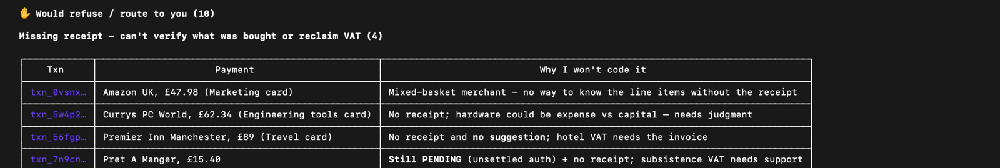

0
transactions read
Financial close · Seapoint MCP · Claude + Strands
Everyone in AI accounting sells you a number you have to take on faith. This one sells you the 0.5% it refuses to touch — the cells it leaves blank, with the source rows that say why, and a write path that cannot move silently.
Built for the FinOps Hackathon · Seapoint × 13books Capital × Claude · 20 Oct 2026 · MIT
Two minutes · the entry film
120s · 1920×1080 · 13.8 MB · v6, re-cut after judging to open on the six-step workflow. Hosted as a release asset, so no video lives in the repo tree. If your browser won't inline it, open the release and it will play.
Nothing in the film is quoted here that isn't on its screen, and nothing on its screen is unlabelled about where it came from. The frame-by-frame source is videos/close-keeper-finops/index.html, so the cut is re-derivable from the repo.
The workflow this sits inside
Not a new process. The same six steps, run tonight by someone whose day job is not bookkeeping — and the only thing that changes is step three.
| Step | How it is done today | Where it breaks |
|---|---|---|
| 1 Pull the data | Bank statement and invoice list out of the accounting system; the feed lands in the ledger tool.office manager, or nobody — it is scheduled | Doesn't break. This is solved. |
| 2 Match invoice to bank | Rules and ML in the ledger tool match the clean majority and sync to Xero.the software — Seapoint does this today | Doesn't break either, and it is why we are not selling reconciliation. Say that out loud: the sponsor of this hackathon already does steps 1–2 better than we could. |
| 3 Work the unmatched list | A person goes down a list of rows: pick a GL code from the chart of accounts, decide the VAT treatment, attach the receipt. The usual heuristic is "what did we code it as last month?"founder at 11pm, or a fractional CFO billed by the hour | This is where the guess enters and nothing records that it was a guess. A plausible code becomes the pattern. VAT gets reclaimed or excluded on the same assumption — £248 rides on one £1,240 invoice. And the reason lives in someone's head, so next year nobody can reconstruct it. |
| 4 Post the recurring journals | Accruals, prepayments, depreciation, insurance spread across the year.controller or the CFO's contractor | Breaks constantly — and we do not touch it. close-keeper has no opinion about accruals. Listed here so the boundary is visible. |
| 5 Tie out the balances | Each balance-sheet account is agreed to a supporting schedule; movements over a threshold get explained versus last month.controller, then a reviewer | The evidence is a folder of PDFs and one person's memory. Enterprise tools automate this well and cost a controller's salary to run. |
| 6 Package and approve | Burn, runway, cash by category rebuilt by hand in a spreadsheet for the board pack; someone senior signs the close.whoever owns the number | It waits for a busy human, so the queue ages. APQC's August 2026 survey of 10,198 organisations puts the median close at 6.0 days — most of that is waiting on steps 3 and 6. |
The improvement is not speed, and we have deliberately not claimed speed. It is that a guess stops being invisible. A founder still makes every real decision — they just make fourteen of them instead of reviewing a ledger, and each one leaves a record an outsider can read.
This list exists because the entry was judged partly on whether it showed the workflow it improves on. It does show it — including the parts of the workflow we leave alone.
The counted claim
Two thousand six hundred and sixty-four transactions read through Seapoint's MCP. Two thousand six hundred and twenty-nine tie on their own. Fourteen cannot be tied without a person. Ten of those fourteen are refused outright, because the evidence contradicts itself.
14 ÷ 2,664 = 0.5%. Ask for the number and it also returns £162,333.84 of September spend across 203 line items and 12 categories — which is the part that proves it is querying a live account rather than reading a fixture off disk.
Where this data comes from, stated plainly. The ledger is Seapoint's seeded hackathon dataset — the sandbox org Hackathon — tieout. No real company's books appear anywhere in this project, and we never claim a customer. What was live is the connection: every read, the one confirmed write, and every refusal quoted on this page ran against that sandbox over Seapoint's MCP on 20 Oct 2026, with the author's own permissions. The terminal header in the demo film says the same thing on its own line.
A close is not a data-entry problem. It is a decision problem that happens to involve a lot of data entry — and the decisions are exactly the part every competitor automates by guessing.
Why the repo is called tieout
In auditing, a tie-out is the procedure that verifies every reported number against the underlying records, workpapers, or source documents. Tick — mark each item as traced to its evidence. Tie — foot and cross-foot so the detail sums to the total.
The convention that matters: an item that cannot be traced is not filled in. It is left untied and raised as an exception. In this profession a blank is the correct answer when there is no evidence — filling it is the error.
Reconciliation matches two sets of numbers. A tie-out is a promise about evidence: every figure you reported, I can show you the paper behind it. Machine matching can report success while the evidence is absent — the column foots and the tie is a lie. This agent separates "the columns agree" from "I can support this number", and only claims the second when it's true.
Left: a tired founder rubber-stamps that first card at eleven o'clock and £248 of VAT rides on which line is right. The agent won't fill the cell. It shows the contradiction instead. Right: the one it can support — and even then, it asks.
The judgment queue
Filing says Legal & Professional fees; the suggested coding says 433 Insurance at 0%. Insurance premiums are VAT-exempt, so £248 turns on which is right, and no receipt exists to settle it.
The agent's own note, verbatim:
Surfaced, not written. No number was posted to the ledger.
The narrative resolves to a marketplace, not a counterparty, so the expense cannot be tied to a single cost category on the evidence available. Guessing here would create a plausible-looking row that no document supports.
Receipt attached, vendor unambiguous, amount ties to the invoice. The agent proposes the coding and waits; on the go-ahead the write goes through the governed path and returns its own audit record.
Classify, generate, verify, repair up to three times. Anything that clears the gate is filed quietly and does not interrupt anyone. Attention is the scarce resource in a twelve-person company; the queue is the product.


The uncomfortable comparison
a vendor's own accuracy claim · unaudited · self-reported
A percentage you cannot interrogate, computed by the same system it grades. The moment a model is allowed to fill an unsupported cell near a ledger, the missing 2.2% is not a score — it is a posting.
counted — 14 of 2,664, each one with its rows
Fourteen blanks and zero guesses. Not a better accuracy number: a different claim. It is the only one of the two an auditor can ask follow-up questions about.
And the market context
APQC's August 2026 survey of 10,198 organisations puts the median close cycle at 6.0 days. Candidate numbers for the CPA exam fell roughly 43% between 2016 and 2024.
Enterprise close software assumes you have a controller and a budget to match; it is sold to people who already have the role. A twelve-person startup with a fractional CFO on hourly bill does the close at eleven at night, and deserves better than a guess with a decimal point on it.
Both figures above are external, named, and checkable — deliberately not the "88% of spreadsheets contain errors" kind of statistic. Everything else on this page was counted by us, on data labelled with where it came from.
Safety and oversight, in the tools
record_correction(narrative="EXAMPLE SERVICES", …) correction : c141e8da — evidence; it influences nothing yet propose_rule(c141e8da) rule : c2564271 'example services' -> 'Example Services Ltd' status : candidate — still inert activate_rule(c2564271, reviewer='quincy') << before validating REFUSED: rule has no validation: c2564271-1437-488a… validate_rule(f1f46a7b, cases=1 positive-only replay) eligible : False coverage : positive=True, hard_negative=False, scope_boundary=False, conflict=False activate_rule(f1f46a7b, reviewer='quincy') REFUSED: rule is not eligible for activation: f1f46a7b-fcef-4701… validate_rule(f1f46a7b, cases=7 labeled replays) eligible : True coverage : positive=True, hard_negative=True, scope_boundary=True, conflict=True activate_rule(f1f46a7b, reviewer='quincy') << same call, now earned status : active suggest_mappings(next month, same narrative) decision : suggested vendor: Example Services Ltd reason: approved exact alias
Verbatim output of the take. Nothing here calls a model, which is the point: the governance is in the tools, not in a prompt the model can argue with.
A compromised agent loop still cannot post a decision or activate a rule, because the capability was never handed to it. Autonomy in this design means reading and flagging on your behalf — not writing without you.
The counter-question this invites is fair: isn't leaving it blank just the agent giving up? It blanks, it asks once, and next month it doesn't have to ask, because a human approved the reasoning and it cleared the replay gate. The blank is not the end of the workflow. It is where the workflow becomes auditable.
Try it
The key-free walkthrough: the exception queue, a decision review, and the full governed-memory lifecycle including the refusal when validation is skipped.
Runs a seeded 29-row fixture so it works with no credentials and no network. It is deliberately not the live account.
git clone https://github.com/udirobert/tieout cd tieout && uv sync --directory research python /tmp/close-keeper-video/refusal_take.py # or the # equivalent tool calls in close_keeper/README.md
Connect through Claude Code — Seapoint's Auth0 tenant issues no client_id to unregistered clients, so Claude is the authenticated harness. Reads live with your permissions; writes only through the confirmed, evidenced path.
claude mcp add --transport http seapoint-staging \ https://mcp.seapoint.dev/mcp /mcp # then authenticate in the browser